A photographic journal · Java, Indonesia
Anna’s
Travel.
Twenty‑five frames from a single trip — rice paddies and small mountain roads, tall pines and a cave lit blue, an afternoon of sweet tea, and a night spent walking through a garden made entirely of light.
Begin readingBy Day
The day moves slowly here. Water finds its level, palms lean toward it, and the paddies do what paddies do — sit perfectly still, holding the sky. From there the road climbs into the hills: pines, small parks, a railway, a cave lit blue.


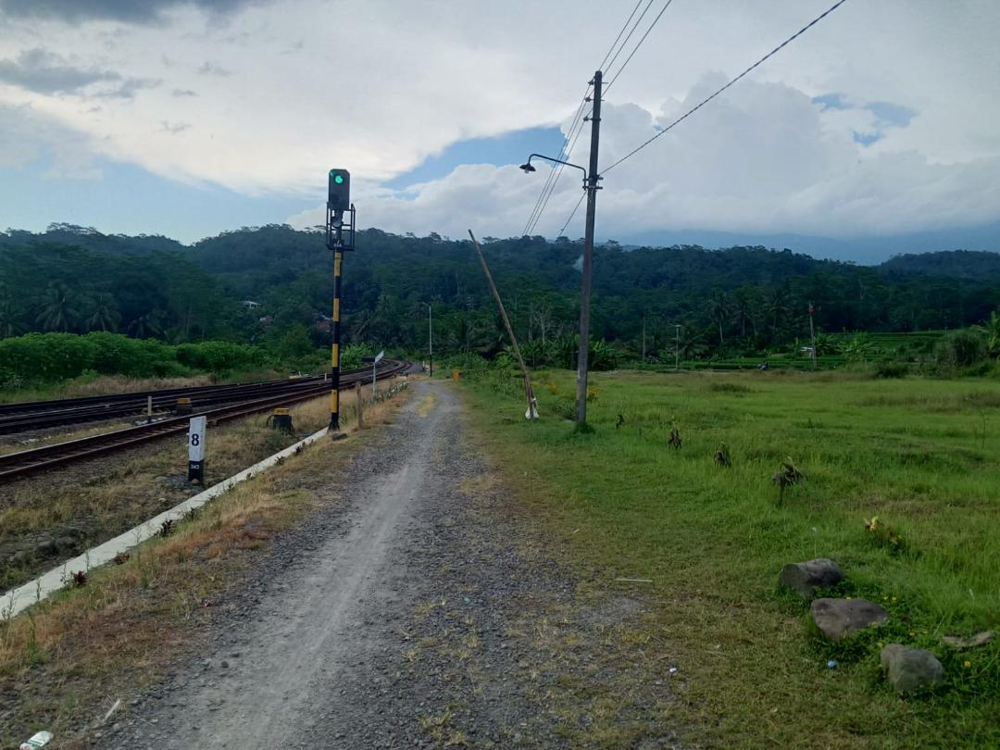
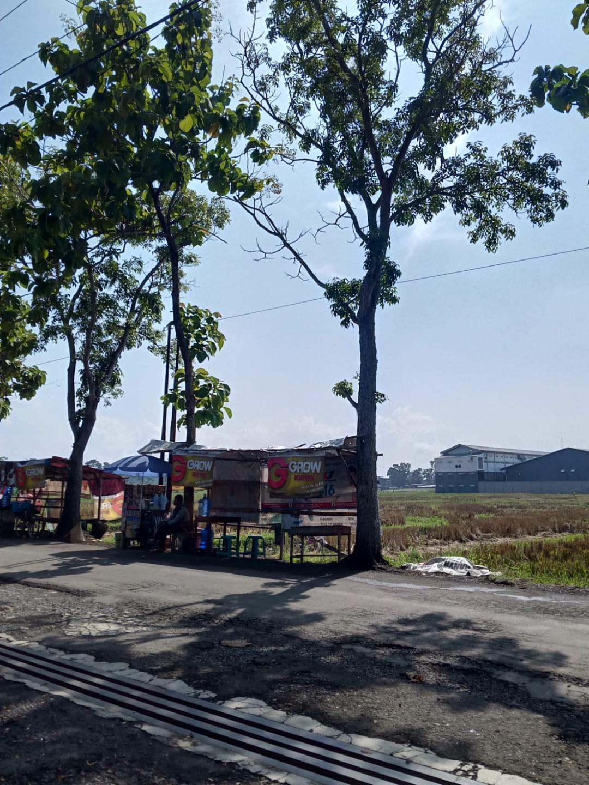
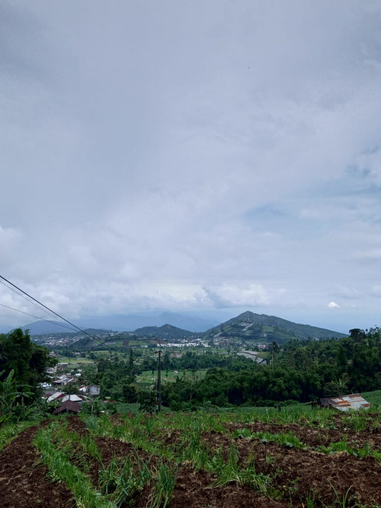
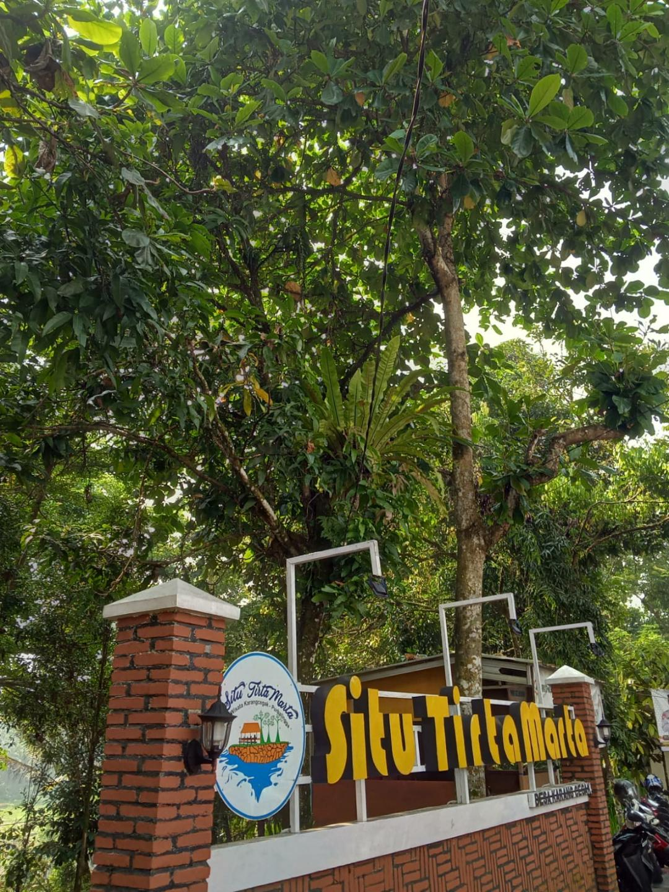
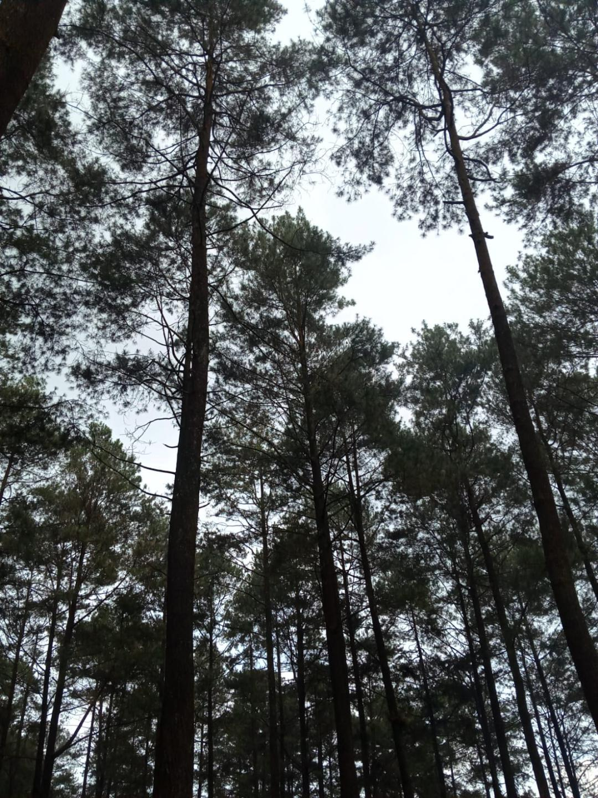
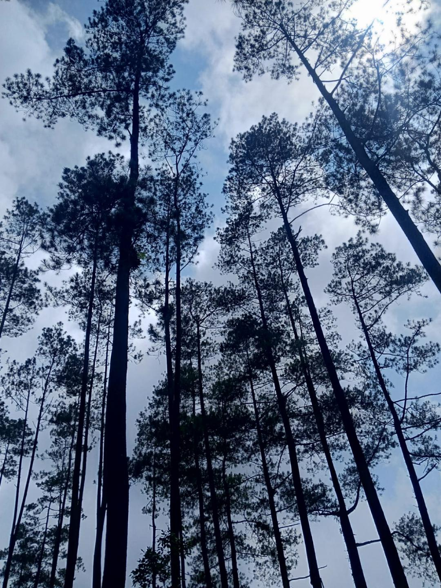
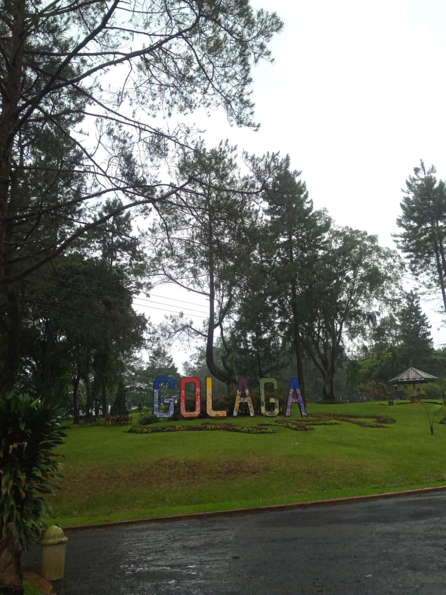
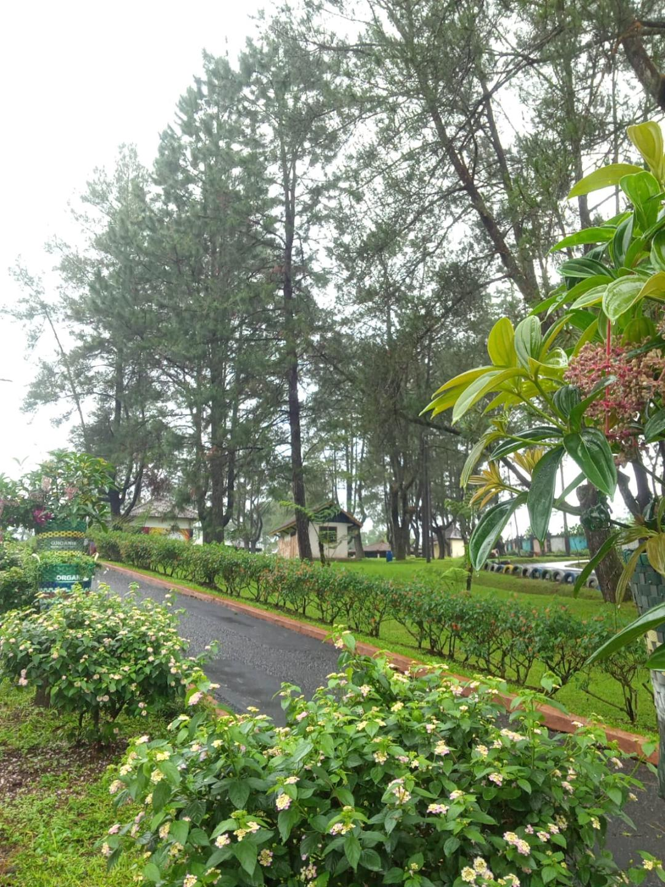
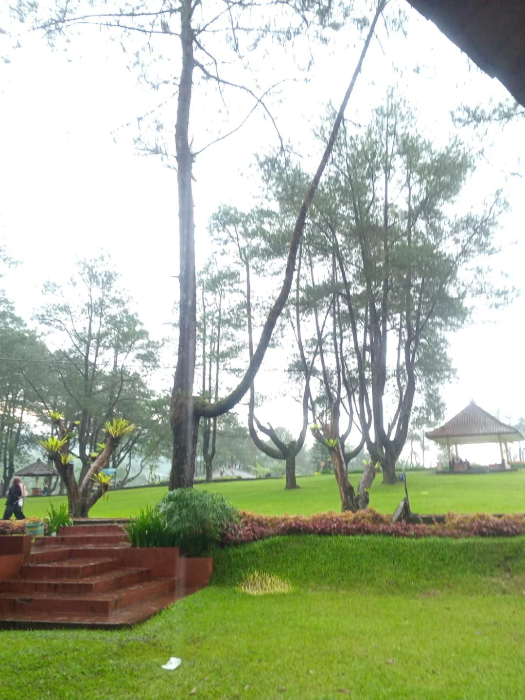
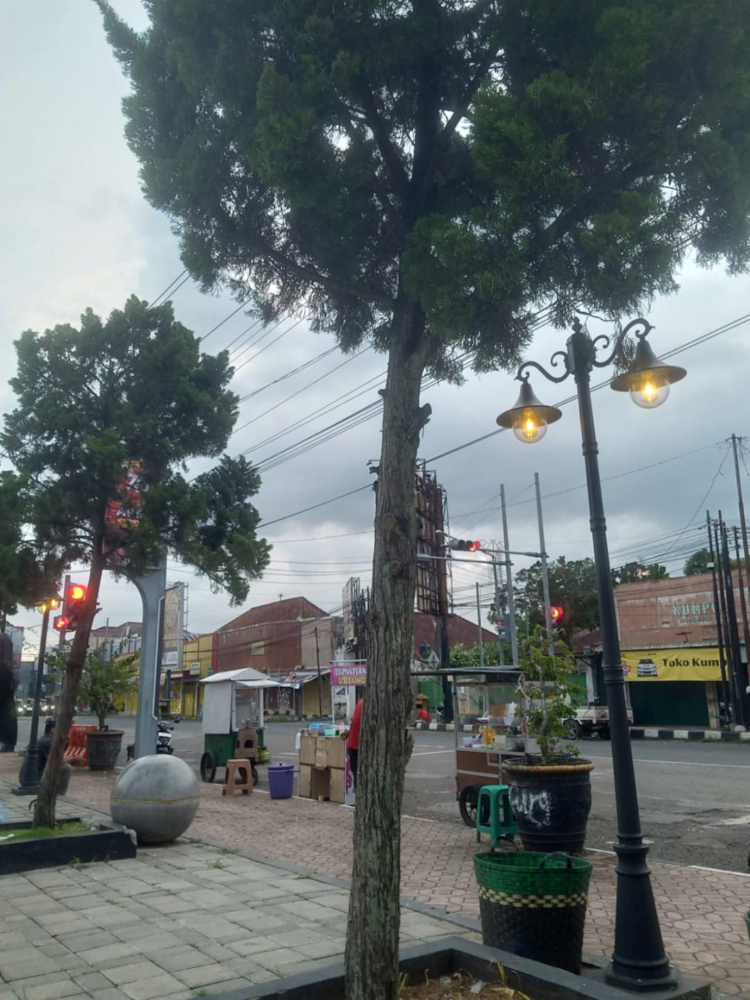
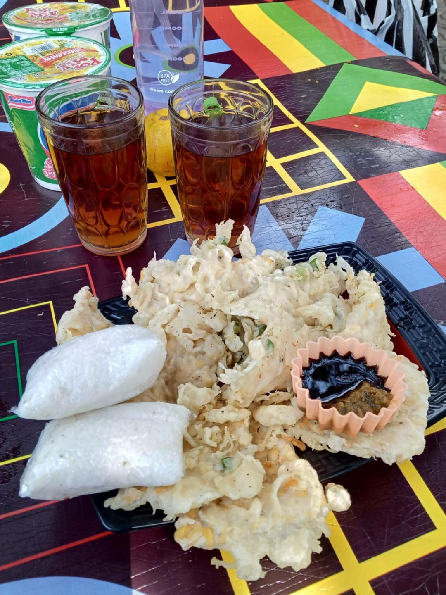
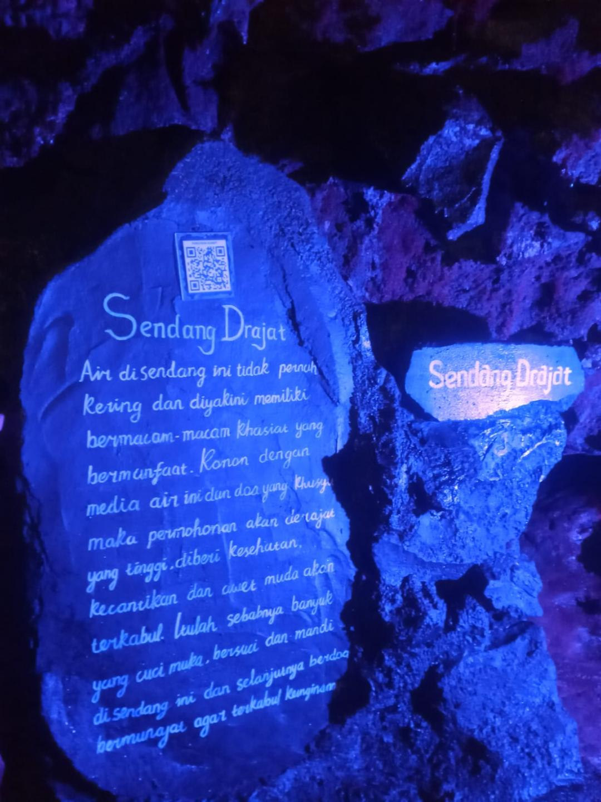
Field note: it had rained the night before, and everything — leaves, brick, the brim of the fountain — was still polished. By the afternoon the cloud came down and the pines went quiet.
By Night
And then, the lights. Half a million of them, planted in the grass like flowers, arching overhead like rain caught mid‑fall. We didn’t talk much — just walked.


A page for visitors
If you’ve read this far — leave a word. Anything: a place you’ve been, a memory it stirred, a simple hello.
No notes yet — be the first.
Loading notes…
About this journal
Anna’s Travel is a small, slow-growing diary of places. The photographs are taken on a phone, kept mostly as they fell out of the camera, and gathered here so they can stop living inside it.
— Anna Yuriska